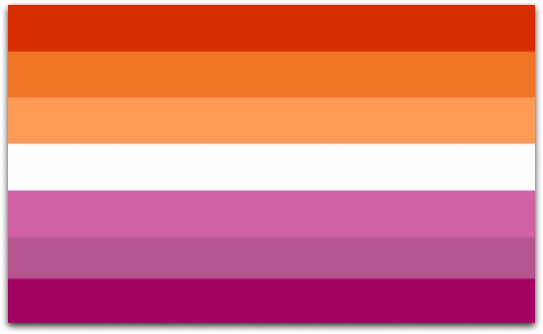
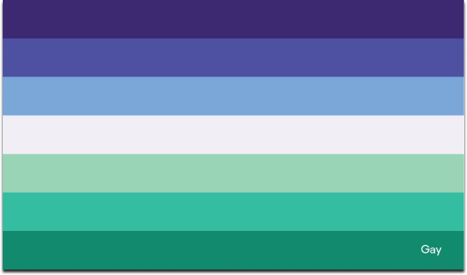
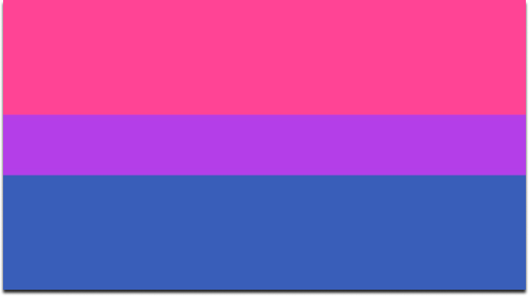
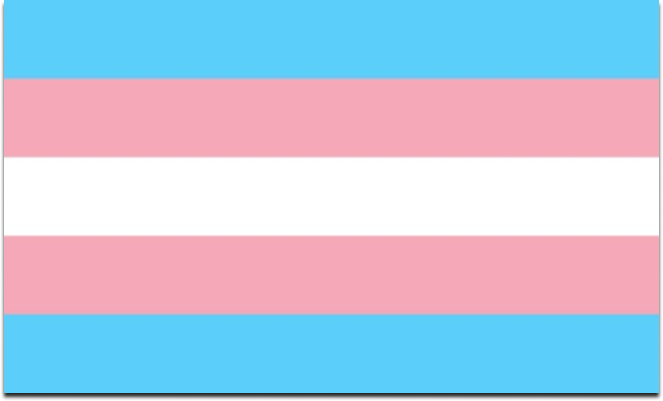
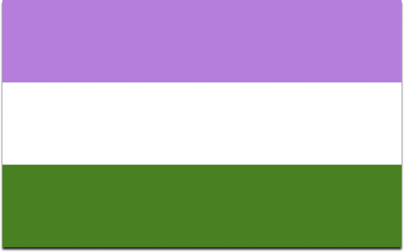
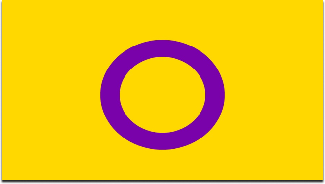
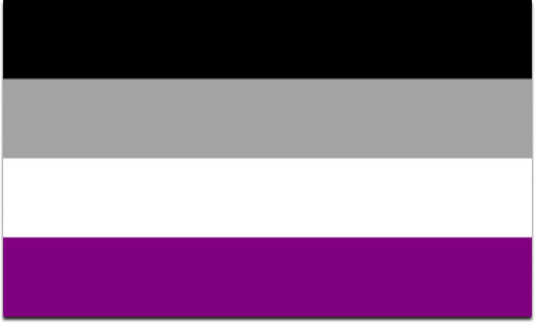
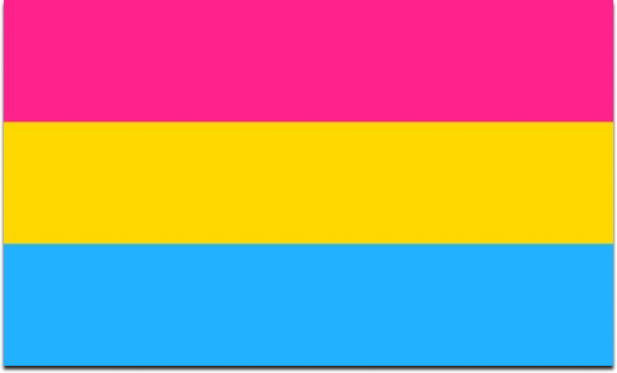

Lésbicas

O significado de lésbica faz referência a uma mulher homossexual, ou seja,
que sente amor ou atração sexual por outras mulheres ao invés de sentir algo pelo sexo oposto.
Como orientação sexual, esse termo foi construído a partir do século XX, afinal desde o começo da
história da humanidade se percebe a diferença entre as possibilidades de liberdade e independência
para que se pudesse existir relações homossexuais como no caso dos homens.
Além disso, o termo “lésbica” é utilizado como uma forma de expressar um relacionamento ou comportamento
sexual e/ou romântico entre duas mulheres, sem levar em conta a orientação sexual delas.
Gays

Gay virou o termo para pessoas atraídas por parceiros do mesmo sexo. Com o tempo, "gays e lésbicas"
se popularizou para frisar questões distintas das mulheres, e "gay" hoje é mais usado para homens.
Ou seja, são homens e pessoas alinhadas ao masculino, que se atraem somente por homens e
pessoas alinhadas ao masculino
Não precisa ter tido, necessariamente, experiências sexuais com o mesmo sexo para se identificarem como gays.
Bissexuais

Hoje, a bissexualidade é definida como a atração por mais de um gênero.
É por isso que muita gente diz que ela se assemelha à pansexualidade.
É comum acharem que o bissexual está indeciso sobre gostar de homem ou mulher. Isso acontece por conta dos padrões
heteronormativos que são impostos, no qual só é possível gostar de um sexo.
“A bissexualidade é uma certeza de que é possível se sentir atraído por ambos os sexos, sim”.
Transgênero/Transexual

A identidade de gênero se refere à experiência de
uma pessoa com o seu próprio gênero. Pessoas
transgênero possuem uma identidade de gênero
que é diferente do sexo que lhes foi designado no
momento de seu nascimento
Uma pessoa transgênero ou trans pode identificar-se
como homem, mulher, trans-homem, trans-mulher,
como pessoa não-binária ou com outros termos, tais
como hijra, terceiro gênero, dois-espíritos, travesti,
fa’afafine, gênero queer, transpinoy, muxe, waria e
meti. Identidade de gênero é diferente de orientação
sexual. Pesoas trans podem ter qualquer orientação sexual, incluindo
heterossexual, homossexual, bissexual e assexual.
Muitas pessoas trans desejam ter seu nome social e
gênero legalmente reconhecidos e registrados nos
documentos de identidade oficiais. Muitas delas
também alteram sua aparência física, incluindo o
modo de vestir, de forma a afirmar ou expressar
sua identidade de gênero. Algumas pessoas trans
– embora não todas elas – se submetem a cirurgias
de redesignação de gênero e/ou terapia hormonal.
Queer

A última definição oficial da sigla do movimento LGBT ocorreu em 2008, na 1ª Conferência Nacional de Gays, Lésbicas,
Bissexuais, Travestis e Transexuais. De lá para cá, outras letras foram incluídas de maneira não-oficial, mas não menos legítima,
por reinvindicações sociais. É o caso do “I”, de intersexuais, do “A”, de assexuais, e do “Q”, que representa a palavra
Numa busca rápida na internet, é possível encontrar a informação de que o termo Queer surgiu na língua inglesa por
volta do ano 1500, com o sentido de “estranho, peculiar, excêntrico, esquisito”. Em 1922, ele passou a ser utilizado
como adjetivo, de forma pejorativa, para homossexuais, algo como “bicha, veado, boiola”, um xingamento.
Na década de 1980, nos Estados Unidos, surgiram grupos militantes que se autointitulavam Queer. De acordo com Colling, os principais
objetivos desses grupos eram chamar a atenção da sociedade para a epidemia do HIV/Aids, que era ignorada pelo governo do presidente
Ronald Reagan, e demarcar uma posição política de ir contra as normas e padrões sociais, heterossexuais e cisgêneros.
O grupo Queer Nation tinha agenda anti-heterossexual. Aumentou a visibilidade dos LGBT e tentou combater a homofobia.
Na época, queer ainda era um insulto.
Queer é um termo para quem não se vê no binômio feminino/masculino e exibe características de um, de ambos ou nenhum.
Intersexuais

Intersexual, isto é, uma pessoa que nasceu com uma variação nas características sexuais que identificam cada sexo.
As diferenças podem ser encontradas nos genitais, cromossomos, gônadas ou hormônios, que não coincidem com o entendimento
binário padrão dos corpos - nem masculino, tampouco feminino.
É muito raro que essas alterações genéticas causem o desenvolvimento de câncer. Acontece com apenas 1% das pessoas
intersexuais, segundo as estatísticas.
Assexuais

A assexualidade é a falta de atração sexual. Ou seja, a pessoa não se sente atraída por ninguém, nem age por um desejo erótico.
Essa definição é apenas um espectro sobre o tema, que é amplo e diverso dentro da comunidade.
Portanto, a assexualidade não é determinada por aquilo que a pessoa faz ou deixa de fazer. Na prática, isso significa que
ela pode ser assexual praticando sexo ou não. E ao contrário do que muitos pensam, a pessoa assexual também pode se envolver
em relacionamentos, beijos e abraços.
Da mesma forma que há pessoas que não gostam do toque ou de uma companhia romântica. Portanto, o ser assexual é algo muito mais
subjetivo e complexo. E vale reforçar que se trata de uma condição intrínseca. O ser humano não escolhe ser assexual por vontade
própria.
Pansexuais

O conceito de pansexualidade existe desde a época de Sigmund Freud, mas foi preciso que estrelas como Miley Cyrus, e mais
recentemente Bella Thorne, trouxessem o assunto à tona e torná-lo moda novamente no século 21.
A palavra pansexual está entre os termos mais pesquisados no Google, desde que a estrela pop se declarou pansexual em uma
entrevista para a revista "Paper"
O termo pansexual é composto pelo prefixo pan-, que significa tudo e a palavra sexualidade, que indica que as pessoas que se
consideram pansexuais não restringem sua sexualidade ao gênero oposto (heterossexualidade), ao mesmo gênero (homossexualidade)
ou gêneros binários, masculino e feminino (bissexualidade).
Atualmente, o termo pansexual é usado para descrever uma atração romântica ou sexual focada em qualidades ao invés de sexo ou
gênero. Em outras palavras, alguém que se considera pansexual é capaz de se sentir atraído por vários sexos e identidades de
gênero.